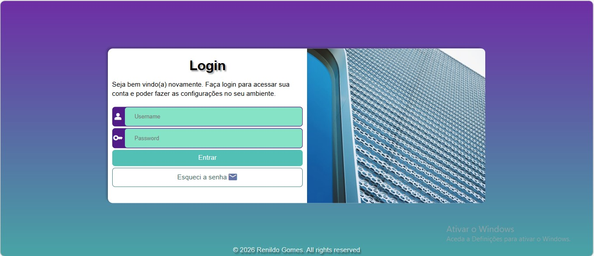
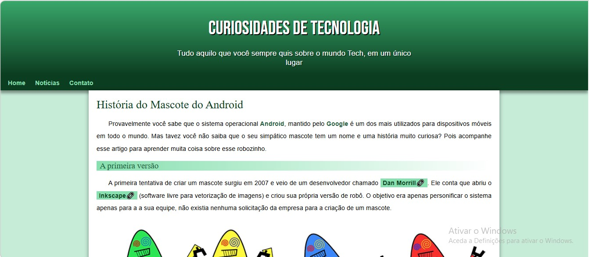
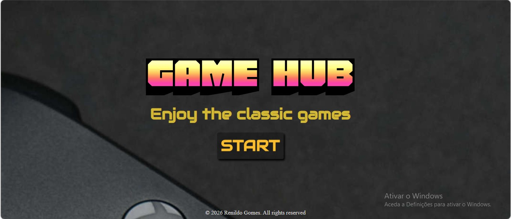

Olá! Sou Renildo Gomes, aspirante a engenheiro de software e autodidata em programação. Desde cedo, me dediquei a aprender tecnologias por conta própria, estudando linguagens como Java, Python e JavaScript, além de explorar desenvolvimento web, algoritmos e programação orientada a objetos. Minha jornada autodidata reflete minha disciplina, curiosidade e paixão por resolver problemas através da tecnologia. Desenvolvi diversos projetos pessoais, aplicando meus conhecimentos em soluções práticas e criativas. Meu objetivo é continuar crescendo profissionalmente, contribuir com projetos que impactem positivamente a vida das pessoas e me tornar um desenvolvedor completo, capaz de enfrentar qualquer desafio da área.
code_xml HTML5
60%
code_xml CSS3
65%
code_xml JavaScript
55%
code_xml Java
40%
communication Comunicação
90%
groups Trabalho em equipe
85%
autorenew Adaptabilidade
80%
social_leaderboard Liderança
85%
2021-2024
Instituto Politécnico João Paulo II
Técnico Médio em Contabilidade e Gestão
2025-2026
Centro de Formação Profissional
Inglês Intermediário (B1)
2022-2023
Curso em Vídeo – Aprendizado guiado
Lógica de programação com Portugol e Python
2024–2026
Curso em Vídeo – Aprendizado guiado
Desenvolvimento de software com Java, JavaScript, HTML, CSS e Programação Orientada a Objetos

2026
Projeto de interface de tela de login desenvolvido com foco em design moderno e usabilidade.
Inclui campos de autenticação, validação de dados e layout responsivo, proporcionando uma experiência simples e intuitiva ao utilizador.

2025
Página web informativa sobre o Android, desenvolvida com foco em estrutura, design e organização de conteúdo.
Apresenta a história e características do sistema, utilizando HTML e CSS para criar uma interface atrativa e responsiva.

2026
Desenvolvimento do jogo Jokenpô (Pedra, Papel e Tesoura), com implementação de lógica condicional e interação com o utilizador.
O projeto simula escolhas aleatórias e determina o resultado de cada partida.